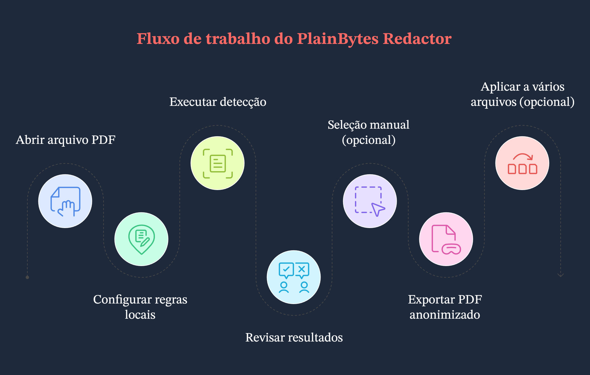
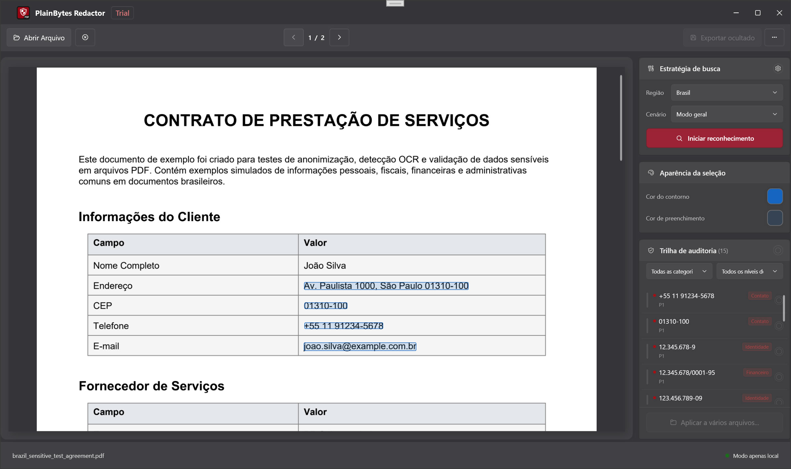

Escrito para o aplicativo desktop Windows atual. Se algo aqui não corresponder à versão instalada, confie na interface do aplicativo.
1. Para que serve este aplicativo
1.1 Redação real vs. cobertura visual
Essas duas abordagens têm significados bem diferentes para conformidade e segurança:
Aspecto
Cobertura visual (a “tarja preta” comum)
Redação real (o objetivo deste aplicativo)
Dentro do PDF
Texto, vetores ou imagens ainda podem permanecer no arquivo, muitas vezes apenas cobertos por outro elemento gráfico.
O conteúdo correspondente é removido do fluxo do documento, para que não possa ser recuperado por uma análise normal.
Copiar / pesquisar
Dependendo da ferramenta, o texto “oculto” ainda pode ser copiado.
O objetivo é que o texto selecionável não contenha mais as cadeias sensíveis (verifique no arquivo exportado).
Mais indicado para
Leitura na tela ou coberturas rápidas.
Compartilhamento externo, arquivamento, auditorias, diligência: qualquer situação em que o conteúdo precise sumir de vez.
O PlainBytes Redactor foi criado em torno da redação real. Use Confirmar para deixar claro quais áreas serão realmente removidas na exportação.
1.2 O que significa “local e offline”
O trabalho fica neste PC: abrir o PDF, aplicar regras, usar IA local opcional, gravar o arquivo redigido e validar tudo acontece localmente.
Nenhum envio de documento para redação: o produto não foi projetado para mandar seus arquivos para a nuvem como parte do fluxo de redação.
Separado de ajuda e atualizações: ao abrir Ajuda, Verificar atualizações e itens semelhantes, o Windows pode iniciar o navegador ou a Microsoft Store. Isso não tem relação com manter o caminho de redação offline.
1.3 Quando é uma boa opção
Fluxos jurídicos, financeiros, de saúde, setor público ou auditoria em que você precisa de revisão humana e uma superfície menor de exposição em caso de vazamentos.
Você precisa entregar um PDF, mas remover documentos de identidade, números de conta, dados de contato e outros elementos identificáveis.
Você tem muitos PDFs com o mesmo layout: depois de confirmar em um arquivo “modelo”, pode usar Aplicar a vários arquivos para reutilizar a mesma geometria nos demais (veja a etapa G no §3 e o §9).
2. Conceitos principais
2.1 Marcas de redação (RedactionMark)
Internamente, cada área que pode ser redigida é uma marca de redação: pense em “um retângulo em uma página mais metadados”.
Página e retângulo: posição e tamanho nas coordenadas do PDF.
Estado: pendente ou confirmada. Somente marcas confirmadas são removidas na exportação.
Origem: regras (padrões/regex), IA ou seleção manual, para diferenciar acertos automáticos do que você desenhou.
Categoria e risco: usados para filtrar, ordenar e agir em massa na lista de auditoria.
2.2 O que significa “confirmar” e por que é manual
A automação não dá a palavra final: regras e IA podem marcar texto normal em excesso ou deixar passar dados sensíveis reais; por isso o aplicativo nunca presume que “tudo que foi encontrado deve ser excluído”.
Confirmar = aprovar após revisão: uma vez confirmada, a marca entra no conjunto de exportação; o que fica pendente não é tratado como final.
Combina com revisão real: a etapa extra se alinha à revisão por duas pessoas, trilhas de auditoria e evita apagar uma página inteira por engano com um clique.
2.3 Regras vs. IA local
Aspecto
Mecanismo de regras
IA local
Base
Padrões integrados ou personalizados (palavras-chave, regex), definidos pelas configurações de região e cenário.
Modelos ONNX locais para detecção semântica ou de entidades; a qualidade depende dos idiomas e dos dados de treinamento.
Previsibilidade
Quando os padrões são claros, o comportamento é estável e fácil de explicar.
Mais flexível com layout e formulação; casos de limite precisam de uma segunda olhada.
Uso típico
Campos muito estruturados: IDs, telefones, e-mails.
Texto narrativo menos estruturado: nomes, endereços, organizações sem formato fixo.
Na prática, eles muitas vezes rodam juntos; a lista de auditoria mostra tudo como marcas, e você escolhe o que confirmar.
2.4 A base para processamento em lote
Não existe um fluxo de “salvar isto como um modelo nomeado e escolher depois”. O lote usa uma base geométrica em memória: ao entrar no lote por Aplicar a vários arquivos, o aplicativo transforma cada marca confirmada do documento atual em um retângulo normalizado (página + coordenadas relativas ao tamanho da página), apenas para aquela sessão em lote.
Para cada PDF na fila, o mecanismo em lote aplica apenas esses retângulos: ele não executa uma nova análise completa por regras ou IA para cada arquivo.
Quando isso funciona: várias exportações do mesmo sistema com o mesmo layout e as regiões sensíveis nos mesmos lugares (por exemplo, demonstrativos uniformes). Se o layout mudar, as caixas podem cair no lugar errado: revise os primeiros resultados.
Regras na central: ajudam a encontrar correspondências no fluxo de arquivo único atual; elas não são executadas automaticamente para cada arquivo da fila. O lote é guiado pelas posições confirmadas que você já definiu.
3. Fluxo de trabalho completo
Exemplo de uso
Neste exemplo, uma pessoa da área jurídica precisa liberar externamente um PDF de desligamento de funcionário com 8 páginas. É necessário remover números de celular, trechos de cartão bancário e e-mails pessoais. O arquivo é um PDF eletrônico real, com texto selecionável, não uma digitalização plana.

Visão geral do fluxo
Etapa A: abrir o documento
Use Abrir ou arraste e solte para carregar o PDF (formatos comuns de imagem também são aceitos; o caminho dentro do aplicativo pode variar).
Tudo — pré-visualização, detecção e marcas — fica ligado a esse arquivo de origem, então abra a versão que você realmente pretende redigir.
Etapa B: escolher região e cenário na central de regras
Abra Regras, escolha uma região (país/área) e depois um cenário de negócio (geral, financeiro etc.). Ative ou desative regras integradas, ou adicione regras personalizadas se necessário.
O conjunto efetivo de regras muda com a região e o cenário; escolher o cenário errado pode deixar regras úteis desligadas ou gerar mais ruído. Você pode salvar preferências antes de fechar para agilizar documentos semelhantes no futuro.
Etapa C: executar a detecção
À direita, na política de varredura, clique em Iniciar detecção (ou no controle equivalente) e aguarde a conclusão do modelo do documento e da análise completa.
Os resultados de regras e IA local viram uma lista de marcas pendentes. Se você mudar região, cenário ou regras, execute a detecção novamente para atualizar a lista.
Etapa D: revisar na lista de auditoria
Na trilha de auditoria à direita, revise os itens um a um ou use filtros. Confirme o que deve sair; remova a confirmação ou exclua linhas para falsos positivos (os controles exatos dependem da versão). As sobreposições amarelas na pré-visualização geralmente ficam sincronizadas: clicar pode alternar o estado de confirmação.
Essa etapa evita apagar a coisa errada ou deixar algo para trás; a exportação considera apenas marcas confirmadas.
Etapa E: desenhar caixas para o que ficou de fora
Arraste retângulos na pré-visualização à esquerda sobre qualquer coisa que regras ou IA não tenham encontrado, mas que você sabe que deve ser redigida. Ajuste as cores da seleção se isso ajudar em fundos carregados.
A detecção automática não pega tudo; caixas manuais são sua rede de segurança.
Etapa F: exportar
Escolha Exportar redigido, selecione onde salvar e leia o resumo final (quantos itens foram removidos, limpeza de metadados, mensagens de validação).
Você obtém uma cópia pronta para compartilhar; o resumo é uma verificação rápida. Se houver avisos, abra o PDF exportado e confira algumas páginas.
Etapa G (opcional): aplicar a mais arquivos
Depois que tudo que deve ser redigido estiver confirmado neste PDF, use Aplicar a vários arquivos (ou a entrada equivalente). O aplicativo cria a base normalizada descrita acima e abre a redação em lote. Adicione mais PDFs com o mesmo layout, defina uma pasta de saída, escolha se deseja remover metadados e execute.
Quando os layouts realmente coincidem, você evita refazer as mesmas confirmações arquivo por arquivo; o lote ainda remove fisicamente as regiões encaixotadas. Importante: isto não é um modelo nomeado reutilizável em disco. Não há arquivo de modelo separado; a base vem deste documento confirmado. O lote também não executa regras/IA novamente para cada arquivo na fila. Se o layout de um arquivo mudou, volte ao fluxo de arquivo único.
4. Visão geral da janela principal

Janela principal
4.1 Pré-visualização (à esquerda)
Para que serve: renderiza cada página do PDF (ou imagem), para que numeração e layout correspondam ao arquivo.
Marcas: áreas pendentes automáticas e manuais aparecem destacadas; clicar em uma região muitas vezes alterna o estado de confirmação junto com a lista (o destaque amarelo depende da versão).
Caixas manuais: clique e arraste na pré-visualização para adicionar uma marca retangular.
4.2 Painel de política de varredura
Para que serve: ponto de entrada para executar detecção (por exemplo, Iniciar detecção), alinhado à região, ao cenário e aos conjuntos de regras da central.
Por que é separado: separa “quando varrer o documento inteiro” de “como trabalhar com a lista de auditoria”, reduzindo confusão.
4.3 Aparência da seleção
Para que serve: ajustar a aparência das seleções manuais — borda, preenchimento, cores personalizadas — para que as caixas continuem visíveis em fundos complexos.
Atenção: isto é apenas ajuda visual; a redação ainda depende da confirmação e da exportação.
4.4 Lista de trilha de auditoria
Para que serve: reúne resultados sensíveis do documento aberto, com filtros por categoria e risco, além de ações de confirmar ou limpar por linha ou em massa.
Sincronização com a pré-visualização: selecionar ou agir em uma linha geralmente rola/destaca a página; clicar em uma marca na pré-visualização atualiza o estado na lista.
4.5 Barra de ferramentas (de cima para baixo)
Abrir: escolha um PDF local ou imagem compatível.
Fechar documento: fecha o arquivo atual.
Página anterior / seguinte: use a barra de ferramentas. Na página de arquivo único, Page Up / Page Down são tratados separadamente para rolar a pré-visualização (veja §7.3).
Regras: abre a central de regras.
Lote: abre a redação em lote.
Exportar redigido: disponível quando há marcas confirmadas.
Mais (⋯): idioma, ajuda, feedback, atualizações, sobre etc.
A barra de status mostra, entre outros indicadores, se o aplicativo está pronto, o nome do arquivo atual e se o runtime de IA local está disponível.
5. Central de regras
5.1 Região e cenário de negócio
Região: país/área; determina quais padrões integrados se aplicam (formatos de ID, regras de telefone etc.).
Cenário de negócio: restringe ou enfatiza grupos de regras (geral, financeiro, saúde, jurídico/governo) para que os padrões combinem com o tipo de documento.
Em conjunto: defina primeiro a região e depois o cenário; após mudanças, execute a detecção novamente, ou você pode continuar vendo uma análise antiga.
5.2 Regras integradas vs. personalizadas
Integradas: fornecidas com o aplicativo, agrupadas por tipo (identidade, finanças, endereço, contato, …), ativáveis por regra, baseadas em dados locais e totalmente offline.
Personalizadas: um rótulo e um padrão — substring simples (sem diferenciar maiúsculas/minúsculas) ou expressão regular .NET. Úteis para códigos internos que as regras integradas não conhecem. Pode haver limite para a quantidade adicionada.
5.3 Quando ajustar as regras
Ruído demais: desative temporariamente regras muito amplas ou escolha um cenário mais adequado.
O mesmo padrão aparece repetidamente e nenhuma regra integrada corresponde: adicione uma regra personalizada para reduzir caixas manuais.
Uma linha costuma agrupar várias ocorrências do mesmo tipo sensível ou chave em várias páginas; confirmá-la significa dizer que todos esses pontos devem ser removidos.
Pendente separa a “suposição do modelo” da “decisão humana”, para que nada seja gravado em massa sem revisão.
Por design, o mecanismo de exportação usa apenas marcas confirmadas.
6.2 Filtros e confirmação em massa
Filtro: restrinja por categoria ou risco para tratar primeiro itens de alto risco ou um tipo de campo (por exemplo, apenas contatos).
Em massa: alterna o estado de confirmação de tudo que está visível no filtro atual (o texto depende da versão). Útil quando um grupo inteiro está claramente correto ou claramente errado.
Dica: confira o filtro ativo antes de uma ação em massa para não incluir linhas que você não pretendia tratar.
6.3 Níveis de risco
Os níveis (crítico, alto, suspeito, médio, baixo, por exemplo) ajudam a ordenar e filtrar para que os resultados mais arriscados apareçam primeiro. Eles não obrigam a confirmar: você ainda decide o que redigir.
7. Seleções manuais
7.1 Quando desenhar suas próprias caixas
Regras e IA deixaram passar algo que você sabe que deve sair: anotações manuscritas em fotos, áreas de layout incomuns etc.
Os resultados estão fragmentados ou desalinhados: remova as linhas automáticas ruins e desenhe uma caixa mais precisa.
Conteúdo apenas digitalizado tratado como imagem: o comportamento difere de PDFs com texto; muitas vezes você dependerá de caixas manuais (veja as perguntas frequentes).
7.2 Trabalhar com marcas detectadas automaticamente
Ordem prática: executar a detecção → usar a lista de auditoria para limpar falsos positivos óbvios e perceber padrões → adicionar algumas caixas manuais para falhas reais → passar rapidamente pela pré-visualização página a página. Marcas manuais e automáticas são tratadas da mesma forma na exportação; o que importa é se estão confirmadas.
7.3 Atalhos de teclado (pré-visualização e marcas)
Enquanto a página de arquivo único está carregada, ela registra PreviewKeyDown na janela principal. Os atalhos abaixo funcionam apenas com um documento aberto e o aplicativo não ocupado. Eles não estão ligados aos botões de página anterior/seguinte da barra de ferramentas.
Tecla
Ação
Tab
Próxima marca de redação.
Shift + Tab
Marca de redação anterior.
←↑→↓
Sem modificadores: ←↑ selecionam a marca anterior, →↓ a próxima. Com qualquer modificador pressionado: apenas ↑↓ rolam a pré-visualização por um passo fixo; ←→ não são tratados nesse ramo.
Enter
Sem modificadores: alterna a confirmação da marca selecionada.
Delete
Sem modificadores: remove a marca selecionada.
Page Up / Page Down
Rola a pilha de pré-visualização em cerca de uma altura de janela.
Home / End
Vai para o topo / fim da pré-visualização.
8. Exportação
8.1 Lista de verificação antes da exportação
Confirme que este é o arquivo que você pretende liberar (contagem de páginas, anexos).
Tudo que deve ser redigido está confirmado; o que deve permanecer visível foi limpo ou removido da lista.
Você revisou visualmente as páginas principais na pré-visualização, incluindo digitalizações ou seções incomuns marcadas manualmente.
Você sabe que a exportação grava um novo arquivo (ou no caminho escolhido) e normalmente não sobrescreve o original; o comportamento segue a caixa de diálogo de salvamento.
8.2 Por que remover metadados
Além do conteúdo das páginas, PDFs podem trazer autor, produtor, carimbos de data/hora, XMP e outros dados. Redigir o texto mas deixar metadados ainda pode vazar contas internas ou histórico de edição. O aplicativo pode limpar isso na exportação (e opcionalmente em lote). Para qualquer documento que saia da organização, normalmente é melhor deixar a limpeza de metadados ativada quando a interface oferecer essa opção.
8.3 Como ler o resumo
A quantidade de itens removidos fisicamente parece coerente com o que você viu?
O resumo informa que os metadados foram limpos?
Se houver avisos de validação de texto, a amostragem automática encontrou algo estranho: abra o PDF exportado e verifique. Não trate apenas o resumo como prova de ausência total de resíduos.
9. Processamento em lote
9.1 O que o modo em lote realmente faz
Depois de entrar por Aplicar a vários arquivos com uma base, cada PDF na fila segue um caminho de aplicação apenas de retângulos: os retângulos normalizados são mapeados para coordenadas absolutas por página, as marcas são criadas, o conteúdo é removido fisicamente e os metadados podem ser limpos opcionalmente. Ele não executa novamente detecção por regras ou IA para cada arquivo.
Assim, as regras e a IA usadas no modo de arquivo único ajudaram você a encontrar e confirmar no modelo; o lote simplesmente copia onde você confirmou para outros arquivos com a mesma geometria.
9.2 Bons casos de uso
Muitos PDFs de um mesmo sistema com o mesmo layout e regiões sensíveis nas mesmas posições relativas.
Você já concluiu a detecção e confirmação em um exemplar e quer evitar repetir esse trabalho em cópias quase idênticas.
9.3 Pontos de atenção
Nenhum arquivo de modelo salvo: fechar a janela de lote descarta a base em memória; na próxima vez, crie-a novamente por Aplicar a vários arquivos.
Abrir Lote pela barra de ferramentas sem esse caminho pode deixar você sem uma base; Iniciar pode permanecer desativado.
Pequenas mudanças de layout podem causar omissões ou regiões erradas; verifique por amostragem os primeiros resultados.
Ative limpar propriedades e dados ocultos quando a opção aparecer para compartilhamento externo.
Alguns tipos de documento ou níveis de licença podem limitar o lote; se Aplicar a vários arquivos estiver desativado, esse é o sinal.
10. Perguntas frequentes
10.1 Por que há tantos falsos positivos?
Regras e IA usam heurísticas: cadeias que parecem sensíveis, nomes de lugares confundidos com nomes de pessoas, fragmentos de tabelas e assim por diante. Ajustar cenário/regras, desligar uma regra ruidosa ou limpar a confirmação na lista geralmente resolve. A confirmação manual é intencional: reduz a chance de apagar com um clique algo que você ainda precisa.
10.2 E os PDFs digitalizados?
Se o PDF for efetivamente uma imagem de página sem camada real de texto, regras e IA terão menos material para trabalhar; você dependerá mais de caixas manuais ou do fluxo específico para raster que a versão oferecer (siga as dicas na tela). Ajuda saber desde o início se você está lidando com um PDF nativamente digital ou com uma digitalização.
10.3 Posso redigir imagens? Por que o texto em fotos não é reconhecido?
Sim. Formatos comuns de imagem podem ser abertos como documentos; você ainda usa pré-visualização, marcas e exportação. Para manter o tamanho do instalador e o custo de execução razoáveis, esta versão não inclui OCR: o texto em fotos não se torna selecionável, então a detecção de texto por regras ou IA quase não se aplica. Redija áreas sensíveis desenhando caixas (e usando atalhos de teclado para mover-se entre marcas). Se precisar “reconhecer e depois comparar”, faça OCR em outra ferramenta primeiro ou forneça um PDF com camada de texto.
10.4 Como faço uma verificação rápida da exportação?
Em qualquer leitor de PDF, tente selecionar tudo / copiar e pesquisar cadeias que você sabe que eram sensíveis.
Revise visualmente cabeçalhos, rodapés e notas de rodapé.
Leia o resumo de validação da exportação do aplicativo; se houver aviso, revise essas páginas primeiro.
Para situações de risco muito alto, adicione os controles habituais da sua organização: segunda ferramenta, revisão impressa etc.